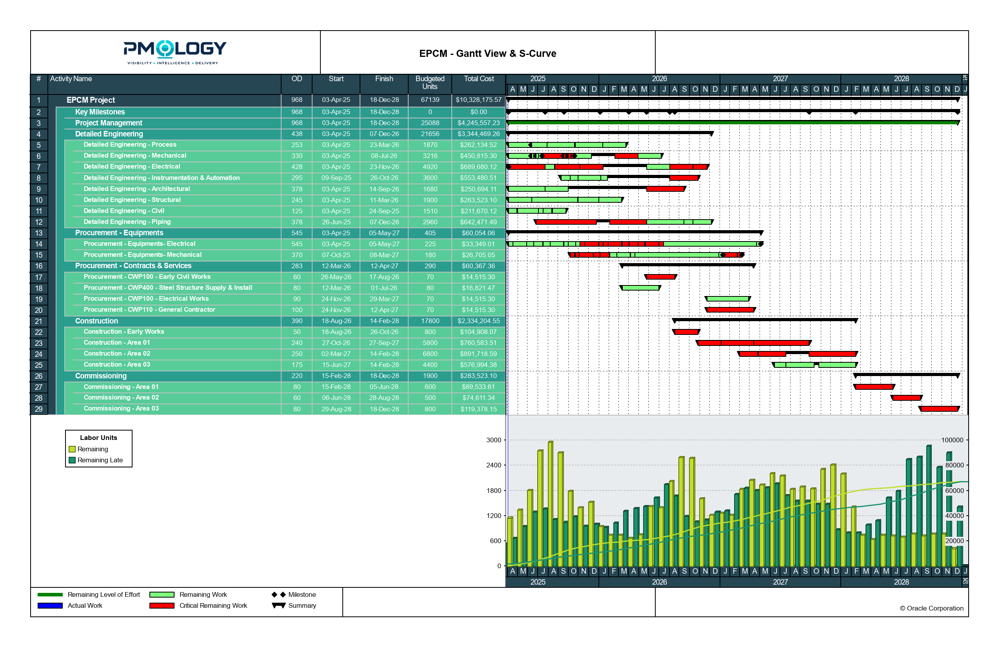
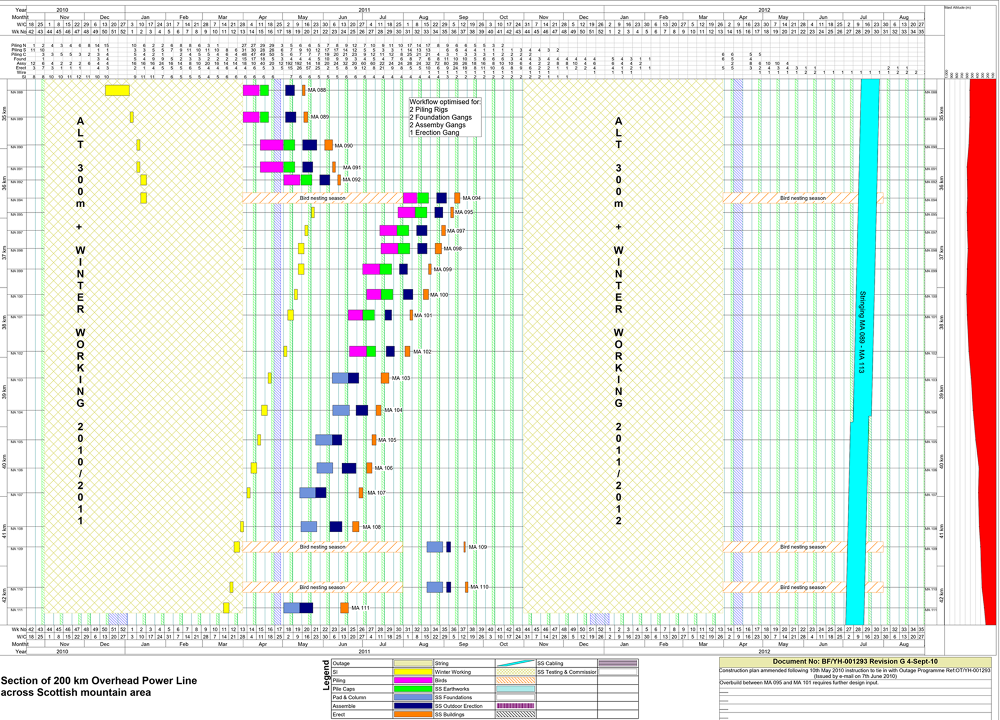
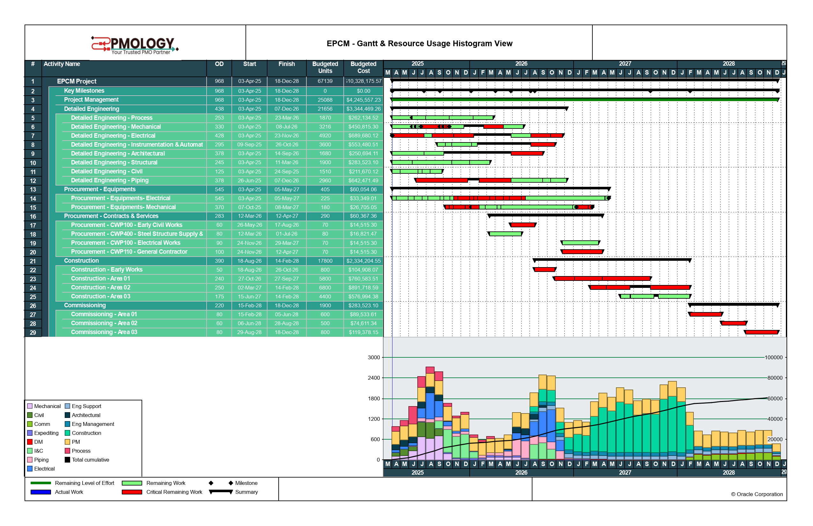
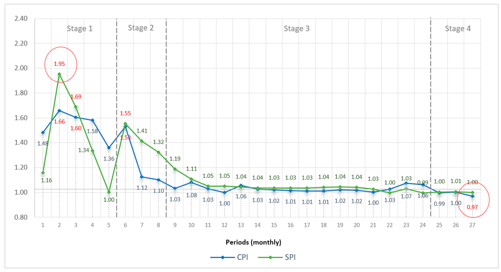

Services / Project Controls, Reporting, and Automation
Project Controls, Reporting, and Automation
Improve before replacing: strengthening schedule, cost, performance, and reporting discipline across project delivery — turning project data into decisions.
PMOlogy's project controls work focuses on strengthening the systems already in place — schedules, cost baselines, performance tracking, and reporting — rather than starting over. The goal is practical impact: better decisions, stronger control, and reduced manual effort, delivered through targeted improvements rather than a wholesale system replacement.
This work draws on deep understanding of how PMOs, project controls teams, engineering leaders, and delivery organizations actually operate — connecting recommendations directly to real project-management needs, not generic best practice for its own sake.
Grounded in project-based, operationally complex environments — including mining infrastructure, railway, oil & gas, heavy infrastructure, industrial plants, pipelines, utilities, and data centers.
What we strengthen
Visibility across schedule, cost, performance, and reporting.
Every engagement starts with the controls already in place. We tighten schedules, cost baselines, and status reporting into a single, reliable picture — one leadership can actually act on.
01 · Schedule management
Schedules people can actually rely on.
Realistic, stakeholder-aligned schedules across the full project lifecycle, with critical-path analysis to catch variances and delay impacts before they compound. Part-time support is available to develop and maintain schedules where a client needs extra scheduling capacity.

Sample output — created with Primavera P6, using demo data.
Linear scheduling
Time-location scheduling with TILOS.
For corridor and infrastructure work — pipelines, rail, roadways, and similar linear projects — TILOS condenses complex, resource-heavy schedules into a single time-location view. Crews, equipment, and sequencing become visible at a glance, making resource allocation and team coordination clearer across long, linear scopes than a traditional Gantt view allows.

Illustrative TILOS example, for prototype purposes only — not PMOlogy's own work. Will be replaced with a PMOlogy-produced example.
02 · Cost & resource management
Cost and resourcing tied to the same baseline.
Resource- and cost-loaded schedules, forecasting, and budget tracking tied directly to the same schedule baseline, so variance is visible before it becomes a problem.

Sample output, using demo data.
03 · Performance tracking
Progress measurement you can verify.
Consistent, verifiable progress measurement — Earned Value Management (EVM), CPI/SPI, trend analysis, and milestone tracking among the methods used — so issues surface early enough to act on.

Sample output, using demo data.
04 · Reporting, dashboarding & automation
A live, interactive sample dashboard.
Real-time dashboards and executive reporting built from a single, structured data pipeline — with repetitive data collection automated wherever it reliably can be. Filter and explore the sample Power BI dashboard alongside — the same kind PMOlogy builds for clients, using sample data only.
Power BI embed pending — waiting on a "Publish to Web" link for a sample dashboard.
Sample dashboard — created with Power BI, using demo data.
Clarity
Complex project and data concepts translated into clear decisions and understandable outcomes.
Efficiency
Simplified workflows and reduced manual work — better use of the time and tools already in place.
Enablement
Practical, tool-specific training — including Primavera P6 and Microsoft Project — so teams work confidently with what's already in place.